c(
"dplyr", "geofacet", "ggplot2", "ggtext",
"glue", "patchwork", "showtext", "sysfonts",
"tidyr", "tidytuesdayR"
)13 US House elections: geography on a grid with {geofacet}
In this chapter, we’ll learn how to arrange faceted plots in a grid that resembles a geographic area with {geofacet}, and look at another approach for creating customized legends.
Packages required in this chapter:
13.1 Data
The MIT Election Data and Science Lab collects, analyzes, and shares data and results about elections in the United States of America, with the aim to improve democracy in the USA. This includes data on elections to the U.S. House of Representatives, at the constituency level (MIT Election Data and Science Lab 2017). The data is regularly updated, and a version of this dataset containing information about elections from 1976 to 2022 was used as a TidyTuesday dataset in November 2023. We can again load the data in using the tt_load() function from {tidytuesdayR}:
tuesdata <- tidytuesdayR::tt_load("2023-11-07")
house <- tuesdata$houseThere are 32452 rows and 20 columns in the data. Let’s take a look at the first few rows of the data using head() (or View() if you prefer):
head(house)# A tibble: 6 × 20
year state state_po state_fips state_cen state_ic office
<dbl> <chr> <chr> <dbl> <dbl> <dbl> <chr>
1 1976 ALABA… AL 1 63 41 US HO…
2 1976 ALABA… AL 1 63 41 US HO…
3 1976 ALABA… AL 1 63 41 US HO…
4 1976 ALABA… AL 1 63 41 US HO…
5 1976 ALABA… AL 1 63 41 US HO…
6 1976 ALABA… AL 1 63 41 US HO…
# ℹ 13 more variables: district <chr>, stage <chr>,
# runoff <lgl>, special <lgl>, candidate <chr>,
# party <chr>, writein <lgl>, mode <chr>,
# candidatevotes <dbl>, totalvotes <dbl>,
# unofficial <lgl>, version <dbl>, fusion_ticket <lgl>There are many state columns, essentially providing similar information in different formats e.g. the state column provides the state name and the state_po column provides the state two-letter abbreviation. There is also a column to identify the constituency (district) within the state. The data gives information about candidates: their name, their political party affiliation, and how many votes they received in the elections they stood in. Other columns provide information about the election, including total number of votes cast, the electoral stage, whether it was a special election, and whether it was a runoff election. The version column contains a data which identifies which release version of the data it is.
13.2 Exploratory work
The house data is very granular, and it’s unlikely we’ll be able to visualize all of the information in one chart. Therefore we can think about different ways of subsetting or aggregating the data. We might choose to focus on:
State: Voting patterns within a specific state, or aggregating to look at state-level data instead of constituency-level
Party: We have information on which party each candidate stood for in the election, including data on fusion tickets where candidates stand for multiple parties.
Time: Data is provided from 1976 to 2022, and we might want to look at trends in vote share or vote counts over time.
13.2.1 Data exploration
Let’s start by having a quick look at whether or not the number of votes has changed over time. The data goes back to 1976 and the population of the USA has increased by over 150% between the 1970 and 2020 censuses (United States Census Bureau 2021a) so might we also expect a similar increase in votes? Let’s start by having a look at the number of candidate votes over time with a quick scatter plot made with plot():
plot(
x = house$year,
y = house$candidatevotes,
xlab = "",
ylab = "Number of candidate votes"
)
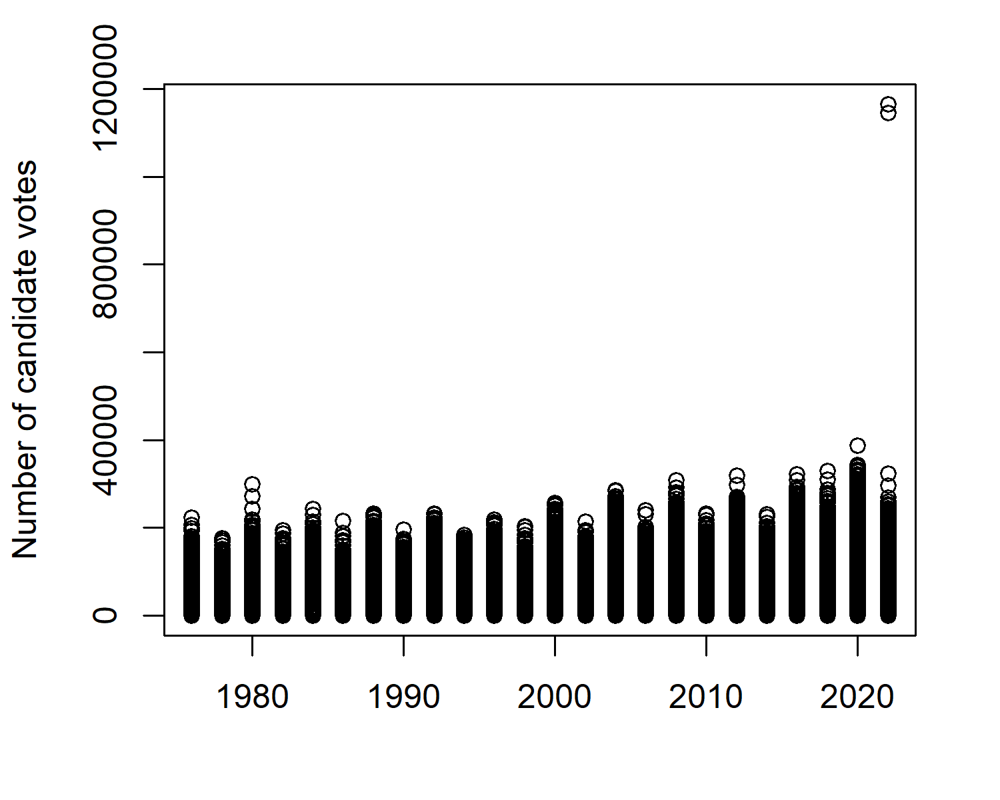
There doesn’t seem to be an especially interesting pattern in votes over time, at least at first glance, in Figure 13.1. However, it has highlighted a potential data issue. In most years, the highest values are around 300,000 but there are two observations in 2022 where the values are well over 1,000,000. We had a similar issue in Chapter 4, where some observations were the sum of other observations. This doesn’t seem to be the case here. For now, let’s exclude these and look at data where the number of candidate votes is below 600,000.
We might also be interested in how the number of candidate votes varies by party, and we can use the boxplot() function to take a explore whether or not there are big differences:
boxplot(
candidatevotes ~ party,
data = house[house$candidatevotes < 600000, ],
horizontal = TRUE,
las = 1,
xlab = "Number of candidate votes",
ylab = NULL
)
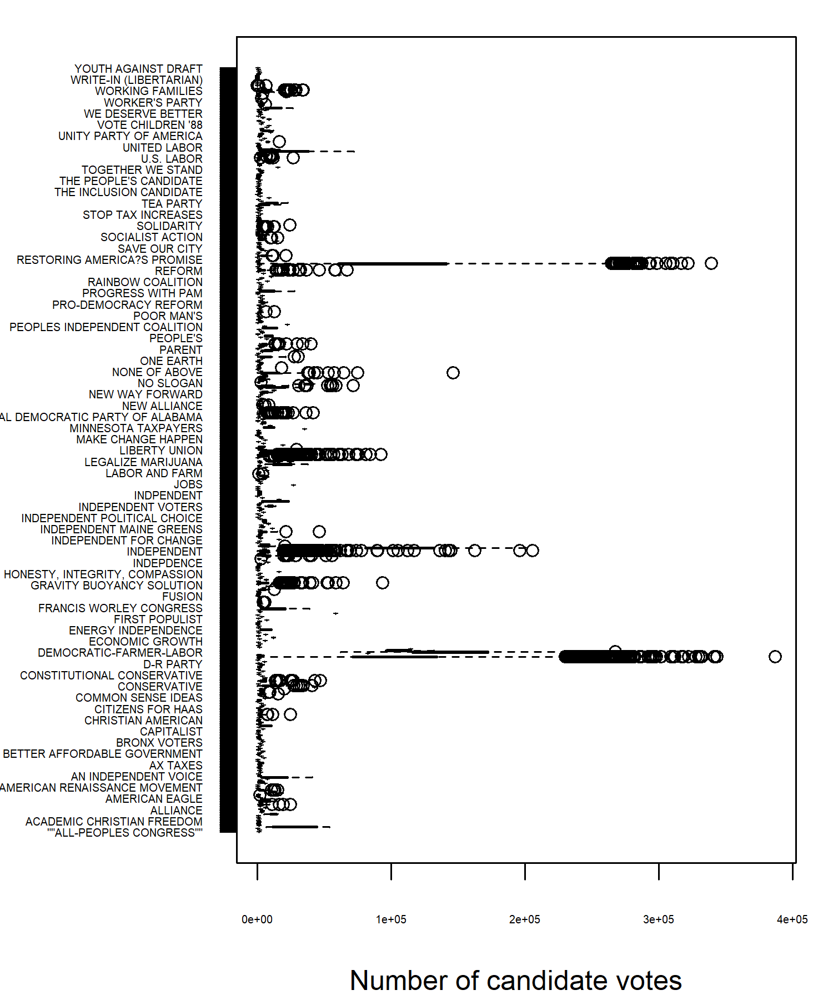
In Figure 13.2 there are a couple of interesting points to note. First, there are many, many unique party names because every independent candidate is listed as a different party name. This means that not all party names can actually by read off from the chart. Secondly, there are a lot of outliers shown in the data, which is highly skewed. Finally, there are a couple of parties that have a much higher numbers of votes. Inspecting the data confirms that these are, as we might guess, the Democratic Party and the Republican Party.
13.2.2 Exploratory sketches
The Democratic and Republican parties have dominated elections during this time period. It’s unlikely we’d be able to draw any reliable insights about individual independent candidates because the numbers are so small, so let’s group all other party candidates together into an other category. We can look at combining Figure 13.1 and Figure 13.2, alongside information about each state to look at whether there are changing patterns in vote share for the major parties over time and space.
We might consider creating an area chart faceted by stated showing the percentage of votes for the Democratic party, the Republican party, and other parties. States that are geographically close together may be more likely to exhibit similar patterns. Rather than arranging the faceted area charts in a rectangular grid, it would make more sense to arrange them based on their geographic location. This would enable easier comparison of patterns across states. Figure 13.3 shows an example of what this might look like:
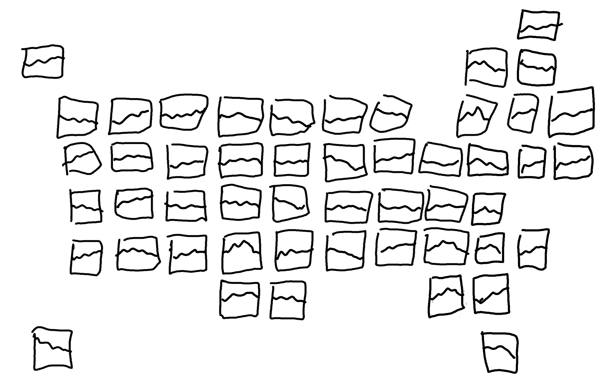
Often in facet charts, the x- and y- axes are shown multiple times. This can often make a chart, especially when using a geographic layout like this, look overly busy. We might choose to create a very minimalist set of facet charts, and use colored text as a legend, as we did in Chapter 6 and Chapter 9. Though the minimalist approach may look cleaner, it can also mean that it’s not as clear what’s being shown on a chart. Let’s add a how to read this chart explainer as a legend, created from a zoomed in version of one of the facet plots:
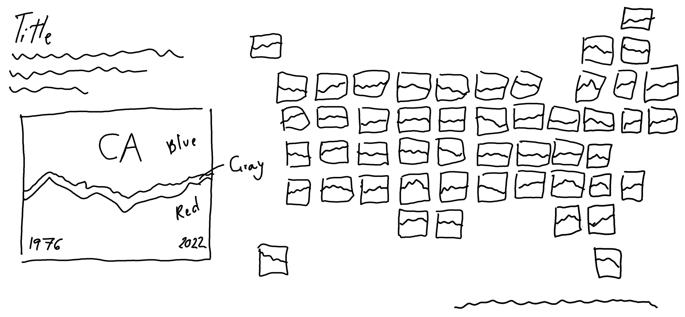
13.3 Preparing a plot
In order to bring Figure 13.4 to life, we need to start by aggregating the other parties, and calculating the number of votes per party, year, and state.
13.3.1 Data wrangling
To aggregate the other parties, we use mutate() from {dplyr} to update the existing party column. We create the new party categories using case_when() and also take the opportunity to provide slightly better, alternative labels for the two dominant parties.
The stage column contains information on whether the election was a general election ("GEN") or primary election ("PRI"). To keep things simpler, we use filter() from {dplyr} to restrict the data to general elections only. We then use group_by() and summarise() to add up the number of votes in each year, state, and party category - remembering to ungroup() the data at the end!
house_data <- house |>
dplyr::mutate(party = dplyr::case_when(
party == "REPUBLICAN" ~ "Republican Party",
party == "DEMOCRAT" ~ "Democratic Party",
TRUE ~ "Other"
)) |>
dplyr::filter(stage == "GEN") |>
dplyr::group_by(year, state_po, party) |>
dplyr::summarise(votes = sum(candidatevotes)) |>
dplyr::ungroup()There are some years for which there were no "Other" candidates in some states, and so there are no rows for these values i.e. they are implicitly missing. As we saw in Chapter 10, this can cause misleading area charts and results in a warning from {ggplot2}. As in Chapter 10, these missing values are not actually missing, they are simply 0. We’ll do as we did before and make sure that every combination of year, state_po, and party exists in the data by using complete() from {tidyr}, and setting any missing combinations explicitly to 0.
13.3.2 The first plot
We’re once again going to create a faceted plot, as we did in Chapter 2, Chapter 3, and Chapter 5. There are two key differences with this plot:
- Instead of arranging the plots into a rectangular shape with a specified number of rows and columns, we want to arrange the plots in a way that resembles some underlying geography.
- There are far more facets (over 50) compared to the previous plots we’ve made (which have mostly had less than 10). Sometimes creating a large number of facets can be slow.
It’s this second issue that means when developing faceted plots, especially when using large data or a complex visualization, it can be useful to create a single plot first. That is, filter the data and create a chart for just one level of the faceting category. This allows you to get the basics of your chart correct, before you start worrying about facet layout.
We start by passing in our plot_data to to the data argument of ggplot(), wrapped inside the filter() function from {dplyr} which subsets the data to just California. We set up the aesthetic mapping to plot the year on the x-axis and the number of votes on the y-axis, split by party.
We’ve already seen examples of making area charts in Chapter 3 and Chapter 10, but we’re going to make a slight change in this chapter. Since we’re going to be comparing states (which each have very different population sizes, and therefore will have very different numbers of votes), rather than considering an area chart of number of votes, we’ll look at the proportion for each party. Luckily, we don’t have to calculate these percentages ourselves, since setting position = "fill" inside geom_area() does this for us.
library(ggplot2)
basic_plot <- ggplot(
data = dplyr::filter(plot_data, state_po == "CA")
) +
geom_area(
mapping = aes(
x = year, y = votes, fill = party
),
position = "fill"
)
basic_plot
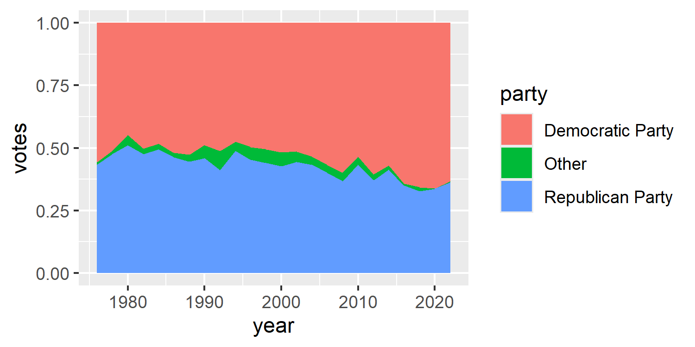
We now have a basic plot for one of the facet values.
Tip 13.1: Piping data into
ggplot()
Since the first argument of ggplot is data, this means that we could pipe the data into the ggplot() function rather than explicitly stating it as the first argument. For example, the code above could be re-written as:
Though this may arguably look neater than nesting filter() inside ggplot(), you’re unlikely to see any other examples of piping into ggplot() for two reasons:
- The combination of
+and|>looks odd, and this outweighs the increased neatness from piping (personal opinion). - It makes it easier to end up with very long, complicated code. Keeping the data wrangling and the plotting code separate often makes more sense.
We can now pass the full data into ggplot() (rather than just the California subset) and add facet_wrap() to create an area chart for each value in state_po.
basic_plot <- ggplot(
data = plot_data
) +
geom_area(
mapping = aes(
x = year, y = votes, fill = party
),
position = "fill"
)
basic_plot +
facet_wrap(~state_po)
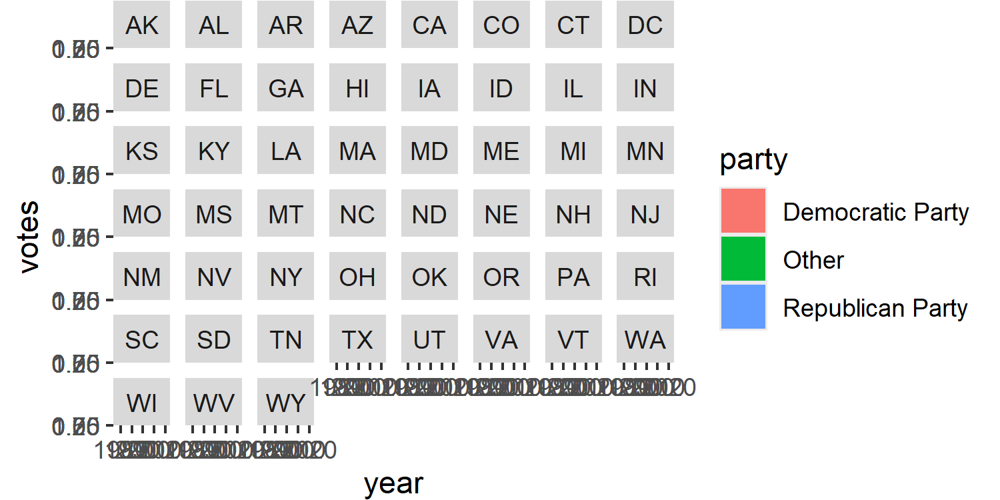
In Figure 13.6, we can’t actually see any of our area charts, only the facet labels. This is a very common problem when working with large numbers of facet categories, and smaller chart sizes. We’ll deal with this problem a little bit later when adjusting the plot themes.
13.3.3 Faceting with {geofacet}
To arrange the faceted plots into a grid that resembles the underlying geography, we’ll use the {geofacet} package (Hafen 2023). The {geofacet} package makes it easier to arrange facets in the shape of a map. This makes it easier to compare data across regions, like states or countries, in a grid format. There are many built-in grids for different geographical regions, including the several for the United States of America. However, you can also create your own custom facet grid if you prefer a different layout, or if no grid exists for the region you are plotting.
To do faceting with {geofacet}, we use facet_geo() instead of facet_wrap(). It works in essentially the same way, and we start by using a ~ to indicate which column is the faceting column. However, there are two things that are a little bit different:
We need to specify which grid layout we want to use. You can use the
get_grid_names()function in {geofacet} to get a list of all of the valid grid names. They are named sensibly based on what region the grid is for e.g."us_state_grid1"and"eu_grid1". Here, we’ll use"us_state_grid2".In order to map the data to the correct facet position on the grid, one of the columns in the data must align with the value in the
codecolumn of your chosen grid. In the"us_state_grid2"grid, thecodecolumn contains the two letter state abbreviations which matches thestate_pocolumn in our data. If you didn’t have the two letter abbreviations, you may need to do so data joining to attach them.
If you have additional states (e.g. Puerto Rico can sometimes be listed in a US state column even though it isn’t) or are missing some states, you can still use geo_facet(). However, it will only plot states listed in the facet grid, and you may get a warning message.
library(geofacet)
map_plot <- basic_plot +
geofacet::facet_geo(
~state_po,
grid = "us_state_grid2"
)
map_plot
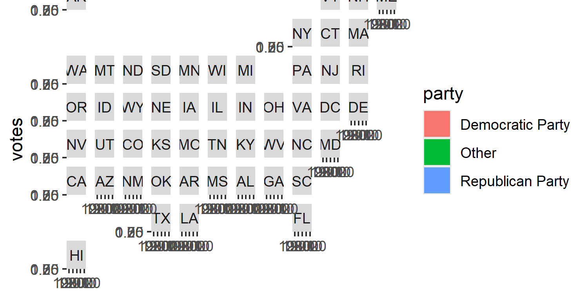
We still have the same problem of not being able to see the details of the chart as there are so many, but you can see from just the facet titles, that the plots are now arranged in a grid that resembles the USA.
13.4 Advanced styling
We’ll now style our charts to apply more intuitive colors, adjust the facet labels to allow the charts to be seen more easily, and create a custom legend that explains how to read this chart.
13.4.1 Colors
In the USA, the Republican Party is represented by the color red and the Democratic Party by blue. As we discussed in Chapter 9, when choosing which colors to use for well-known categories, it’s important not to play into negative stereotypes (e.g. pink for girls). But it’s also important to use what is intuitive. Since these are colors that the parties have chosen to represent themselves, and because they are so well recognized, we’ll stick to red and blue.
Since the visualization is already quite busy, we keep the background colors very simple - using only black and white.
blue_col <- "#0015BC"
red_col <- "#C41E3A"
other_col <- "#AAAAAA"
text_col <- "black"
bg_col <- "white"We can then apply the colors to our plot using scale_fill_manual(), and assigning each color to the relevant party label in values. Since we know we’re going to be creating our own legend later, we’ll remove the default legend by setting guide = "none".
col_plot <- map_plot +
scale_fill_manual(
values = c(
"Democratic Party" = blue_col,
"Republican Party" = red_col,
"Other" = other_col
),
guide = "none"
)13.4.2 Text and fonts
As in previous chapters, fonts can be defined using the {sysfonts} and {showtext} packages. For the main font, we’ll use the Roboto font as we did in Chapter 11. For the title text, we’ll use Carter One, a display font designed by Vernon Adams inspired by fonts used in mid 20th century advertising. It’s a bold font which works well for titles of visualizations.
sysfonts::font_add_google(name = "Roboto")
sysfonts::font_add_google(
name = "Carter One", family = "Carter"
)
showtext::showtext_auto()
showtext::showtext_opts(dpi = 300)
body_font <- "Roboto"
title_font <- "Carter"We write text for the subtitle, using glue() to add HTML styling for colored text as we did in Chapter 7 and Chapter 9. The colored text serves as a legend (though we’ll later also add our own custom legend in addition), and the subtitle text provides information about what the chart shows. As in Chapter 12, we’ll add the information about the source of the data on a new line at the end of subtitle, rather than in the caption. We also add the title text directly in the subtitle variable to enable easier placement of the text, again as we did in Chapter 12.
st <- glue::glue("<span style='font-size:10pt; font-family:{title_font}; color:{text_col};'>Votes in US House Elections</span><br>Area charts indicate the percentage of votes for the <span style='color:{blue_col};'>Democratic Party</span>, the <span style='color:{red_col};'>Republican Party</span>, and <span style='color:#aaaaaa;'>Other</span> parties in general elections between 1976 and 2022.<br><br>**Data**: U.S. House 1976–2022. MIT Election Data and Science Lab.")We also define our social_caption() using the function we defined in Chapter 7, which we’ll later add as a plot caption:
social <- social_caption(
icon_color = blue_col,
font_color = text_col,
font_family = body_font
)We then pass our subtitle, and caption text into the labs() function to add it to our plot. Since we want to position the subtitle text in an unusual place, we use the tag argument rather than subtitle, similar to what we did in Chapter 12.
text_plot <- col_plot +
labs(
tag = st,
caption = social
)13.4.3 Adjusting themes
We know that the facet labels are too large on are currently dominating the visualization as seen in Figure 13.7. There are a few solutions to this:
Make the facet labels much smaller. However, this can make them hard to read and renders the labels somewhat pointless.
Increase the size of the chart. Here, we’re constrained by the physical width of the plot and can’t make it wider. Though we could make the plot taller, we’re then adding quite a lot of additional space simply for labels.
Create our own custom facet labels.
Here, we’re going to go for the third option. Later, we’ll use the theme() function to remove the default facet labels. For now, let’s think about what labels to add. To save space in the plot, the easiest way is to use inset facet labels - positioning the state label inside the area chart. This has the downside of hiding part of the data. However, we can make the text semi-transparent to allow both the state label and the area chart behind to be seen.
We add text labels with geom_text(). The x-coordinate position of the text is set as the mean of the years in the full plot_data data to automatically position it in the middle of the chart. The y-coordinate position is set to 0.5 i.e. also in the middle of the chart since the position = "fill" argument scales the y-axis to be between 0 and 1. The alpha() function is used to control the transparency of the text color.
Note that we use a much smaller value of in alpha() than we normally would here. This is because there are actually multiple labels drawn on top of each other - one for each year, and party combination. Though this isn’t necessarily a problem, if we’re trying to create semi-transparent labels, stacking many copies of the same semi-transparent label on top of each other, results in a pretty opaque label. Though we could filtering the data to consider only one year and party, the {geofacet} package sometimes has issues rendering the labels correctly with this approach.
As we’ve done in previous chapters we set expand = FALSE inside coord_cartesian() to remove the additional space around each plot panel. We also use theme_void() to remove any additional plot elements since we’re aiming for a minimal look and we’ll later design a custom legend that gives the reader all the information that would normally be conveyed by the axes labels and title.
As in previous chapters we use the element_rect() function to set plot.background to our pre-defined background color variable. We also adjust the plot margins using plot.margin. Note that here we’re making the left plot margin very large, as this is where we’ll later position our custom legend. We discussed pros and cons of this approach in Chapter 9.
We can position the title text to the left of the plot, in the wide margin by choosing negative values for hjust. Remember the 0 means left-aligned and 1 means right-aligned. Negative values essentially mean very left aligned! This works here because the title is a single line of text, but for multi-line text the text alignment can often look odd. That means that for the subtitle text (which is a short paragraph), we’re using tag instead of subtitle text. The plot.tag.position allows us to specify a vectpr of co-ordinates for where we want the text to appear - with negative x-coordinates also placing the text into the widened plot margin. It takes a little bit of trial and error to ensure that the title and tag text are aligned with each otehr. We again use element_textbox_simple() to enable automatic text wrapping for the plot tag text, and for the caption to make the icons render correctly.
We set both the strip.background and strip.text arguments to element_blank() to remove all default facet labels, and use panel.spacing to control the amount of space between the facets and move them closer together.
styled_plot_2 <- styled_plot_1 +
coord_cartesian(expand = FALSE) +
theme_void(base_size = 6, base_family = body_font) +
theme(
# Background elements
plot.background = element_rect(
fill = bg_col,
color = bg_col
),
plot.margin = margin(5, 5, 5, 125),
plot.tag = ggtext::element_textbox_simple(
hjust = 0,
color = text_col,
maxwidth = 0.65,
lineheight = 0.6,
size = rel(1.0)
),
plot.caption = ggtext::element_textbox_simple(
hjust = 1,
halign = 1,
color = text_col,
maxwidth = 0.65,
margin = margin(b = 0, t = 10)
),
plot.tag.position = c(-0.50, 0.77),
# Facet arguments
strip.background = element_blank(),
strip.text = element_blank(),
panel.spacing = unit(0.05, "lines")
)
styled_plot_2
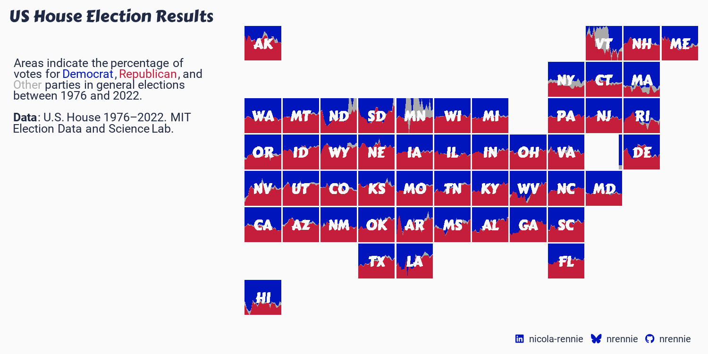
13.4.4 Developing a custom legend
As we did in Chapter 12, we’ll design a custom legend. In Chapter 12, we used a bar chart as a legend which also served as another source of information in the visualization. In this chapter, our custom legend will instead serve as a how to read this chart explainer.
We can take one of the facets, enlarge it, and add annotations to explain what data is shown on the chart. To keep the main chart looking clean, we don’t currently have any axes titles or labels. For example, it’s not immediately clear what years are covered by the data. This doesn’t need added to every chart, but should be annotated on the legend. To increase the accessibility of the chart, and to make sure we don’t rely on color alone as discussed in Chapter 9, we’ll also add direct labels to identify the Democratic Party and Republican Party areas on the chart.
Let’s start by filtering the data, to select only a single state. It doesn’t really matter which one we choose, although ideally one that has enough space for us to add the party labels directly on the chart. Here, we’ll use California ("CA") for the legend plot.
ca_data <- dplyr::filter(plot_data, state_po == "CA")We then reuse the code written for the main plot, passing in the ca_data to the ggplot() function, then adding the aesthetic mapping and the area chart with geom_area(). The colors and custom state (facet) labels are added with scale_fill_manual() and geom_text() as discussed earlier in this chapter.
ca_plot <- ggplot(data = ca_data) +
geom_area(
mapping = aes(
x = year,
y = votes,
fill = party
),
position = "fill"
) +
# label for state
geom_text(
mapping = aes(
x = mean(range(year)),
y = 0.5,
label = state_po
),
family = title_font,
color = alpha(bg_col, 0.3),
size = 4
) +
# colors
scale_fill_manual(
values = c(
"Democratic Party" = blue_col,
"Republican Party" = red_col,
"Other" = other_col
),
guide = "none"
)We then use the annotate() function to add:
Two labels for the start and end year of the data. To keep these within the bounds of the plot, we left align the start label on the left, and right align the end label on the right.
Two labels for the Republican and Democratic parties. We leave the Other category unlabeled as it’s very small, and it’s obviously the only category left over.
As in the main plot, we also set expand = FALSE inside coord_cartesian() to remove the additional space around the edges. We also use theme_void() to remove any additional chart elements, since the annotations convey all the necessary information.
p_inset <- ca_plot +
# year labels
annotate(
geom = "text",
x = min(ca_data$year),
y = 0.05,
label = min(ca_data$year),
family = body_font,
color = bg_col,
size = 3,
hjust = 0
) +
annotate(
geom = "text",
x = max(ca_data$year),
y = 0.05,
label = max(ca_data$year),
family = body_font,
color = bg_col,
size = 3,
hjust = 1
) +
# Party labels
annotate(
geom = "text",
x = mean(range(ca_data$year)),
y = 0.8,
label = "Democratic Party",
family = body_font,
color = bg_col,
size = 3.5
) +
annotate(
geom = "text",
x = mean(range(ca_data$year)),
y = 0.2,
label = "Republican Party",
family = body_font,
color = bg_col,
size = 3.5
) +
coord_cartesian(expand = FALSE) +
theme_void()
p_inset
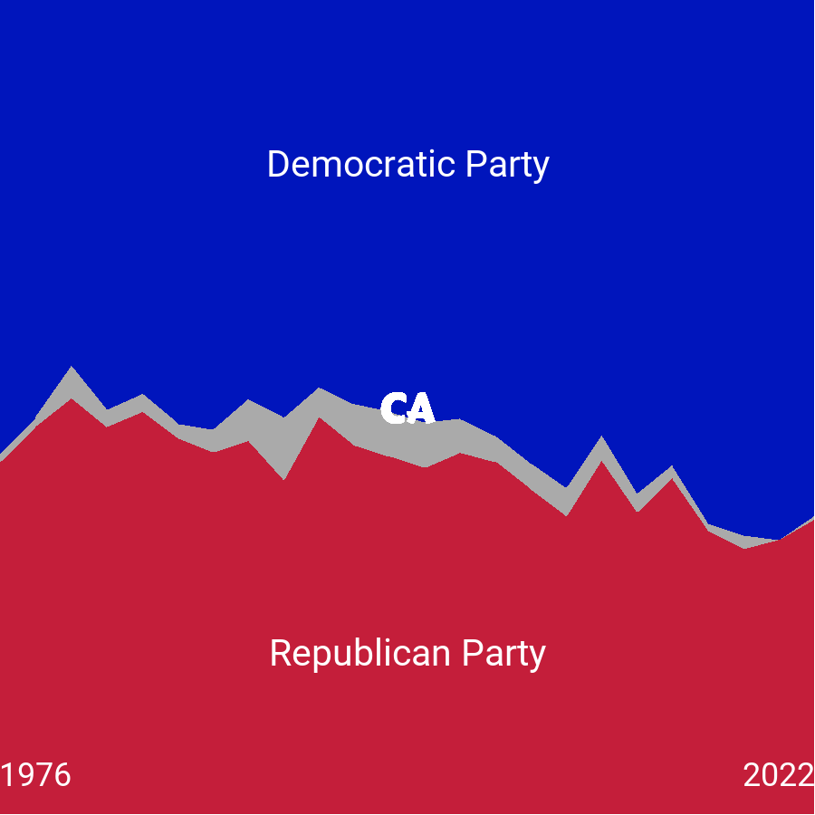
Our custom legend is now ready to add to Figure 13.8.
13.4.5 Joining with {patchwork}
Now, the last step is to join together our custom legend with the main plot. We’ve already left some blank space on the main plot for the legend to go in, so we’ll use the inset_element() function from {patchwork} (Pedersen 2024) as we did in Chapter 12. We use the left, right, top, and bottom arguments to choose where the corners of the legend appear in relation to the main plot - getting these values correct takes some trial and error! Setting align_to = "full" allows us to choose the coordinates relative to the full chart area, rather than just the panel area as per the default settings.
library(patchwork)
final_plot <- styled_plot_2 + inset_element(
p = p_inset,
left = 0.032,
bottom = 0.087,
right = 0.292,
top = 0.55,
align_to = "full"
)
final_plot
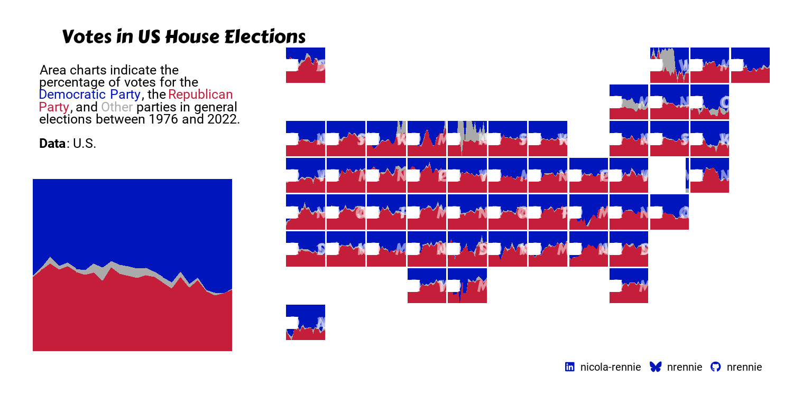
We can then save it to a file with ggsave()!
ggsave(
filename = "us-elections.png",
plot = final_plot,
width = 5,
height = 0.5 * 5
)13.5 Reflection
This visualization summarise a large amount of complex information in a way that is fairly intuitive - the colors match recognisable party colors, the grid is arranged in the a shape that is instantly recognisable, and the area charts clearly indicate vote share over time. However, there are a few more improvements that could be made and other elements we may want to consider.
Though use of state two-letter abbreviations saves space and avoids excessive text, it is more difficult for a reader to easily look up the state they are interested in - especially if they are less familiar with US geography. Perhaps adding some smaller text under the abbreviations, or creating an interactive version that provides state names upon hover, would make it easier.
The use of area charts to show percentages is intuitive and sensible for this, since vote share is essentially what decides an election. However, it would also be interesting to see the counts of the number of votes - especially since states can have vastly different populations. A small change in percentage for a state with a large population may result in large changes in number of votes, but this wouldn’t be seen in our version of this visualization.
Each plot created during the process of developing the original version of this visualization was captured using {camcorder}, and is shown in the gif below. If you’d like to learn more about how {camcorder} can be used in the data visualization process, see Section 14.1.
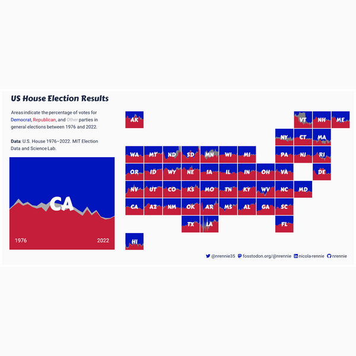
13.6 Exercises
Instead of using California for the custom legend plot, create a plot showing the percentage of total votes across all states. Do you need to update the text to explain how to interpret the charts?
Edit the visualization to show total number of votes rather than the percentage of the vote share. Do you see similar patterns? How can you choose the position of the facet label for the state in an automated way?
{kind=link}
{kind=link}
{kind=link}
{kind=link}
{kind=link}
{kind=link}
{kind=link}
{kind=link}